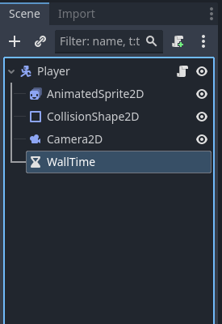
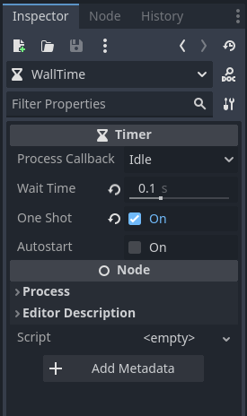

IMPORTANT! This module requires the Wall Jump module to be completed first!
Right now wall jumping can feel a bit... off. This is due to the fact that wall jumping requires you to be holding a direction towards a wall (which can make trying to jump away from it difficult.) To fix this we can implement something quite similar to Coyote Time, though we will need to make some small additions due to the differences with wall jumping.
The first thing we want to do is add a timer node to our player. Navigate to the player scene tree and add a new node to our player node. Find the timer node, add it, and then rename it (I will name mine WallTime).
Once you have the timer added, select it and look in the inspector. We want to set the Wait Time to a very small number (something between 0.1 and 0.15 works well), and check One Shot (which makes the timer stop when it's done instead of looping.)
We will need access to our timer in our player script, so begin to drag the node into the script, hold control, then drop it into your script with the rest of your reference variables. Then we also need to add a new variable to our reference variables to store the wall normal. It should look similar to this:
# Reference Variables
var gravity = ProjectSettings.get_setting("physics/2d/default_gravity")
@onready var sprite = $AnimatedSprite2D
@onready var wall_time = $WallTime
var just_wall_jumped = false
var stored_wall_normal = Vector2.ZEROA Vector2.ZERO is simply a vector that is blank. It does not point anywhere.
Next we need to check things before and after moving, so we will be editing our _physics_process function. Before the move_and_slide method we need to check if the player is only on a wall, and if so, store the wall normal. Then after the player moves, check if they are no longer on a wall, and if they just left, start our timer. A script to do this may look like this:
func _physics_process(delta):
var input_axis = Input.get_axis("Left","Right")
apply_gravity(delta)
handle_wall_jump()
handle_jump()
apply_acceleration(input_axis,delta)
apply_friction(input_axis,delta)
update_animations(input_axis)
# Before Moving
var was_on_wall = is_on_wall_only()
if was_on_wall: stored_wall_normal = get_wall_normal()
move_and_slide()
# After Moving
just_wall_jumped = false
var just_left_wall = was_on_wall and not is_on_wall()
if just_left_wall: wall_time.start()Finally, we need to edit our handle_wall_jump function to both check if our timer has time left and to use our stored_wall_normal if so. We can do that like so:
func handle_wall_jump():
# Skip if not on Wall
if not is_on_wall_only() and wall_time.time_left <= 0.0: return
var wall_normal = stored_wall_normal if wall_time.time_left > 0.0 else get_wall_normal()
if Input.is_action_just_pressed("Jump"):
velocity.x = wall_normal.x * speed * wall_jump_horizontal_scale
velocity.y = jump_velocity * wall_jump_vertical_scale
just_wall_jumped = trueNote the change of the wall_normal variable.
And that is all! Your wall jumping should be much smoother now. Go ahead and try it out and move on to another module.